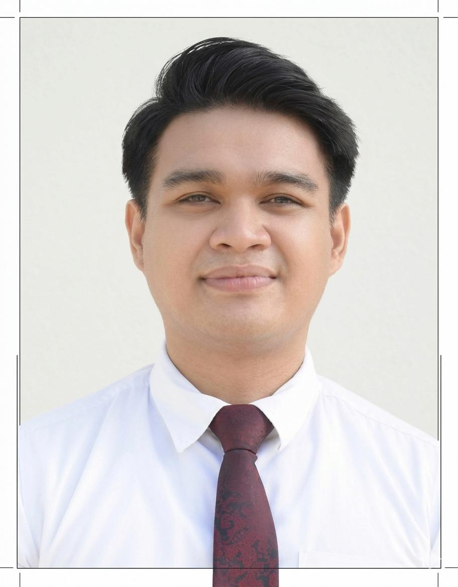

Emmanuel Blas P. Roberto | WDD 130

Hello! My name is Emmanuel Blas Roberto and I am from Cagayan, Philippines. "I'm a 29-year-old father currently balancing the joys of parenthood with my studies in Programming at BYU. When I'm not diving into code or spending time with my family, you can usually find me on the basketball court. I've found that debugging a tricky program and running a fast break actually require the same thing: quick thinking and a lot of persistence."